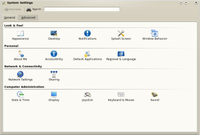

KDE4
Archivierte Anleitung
Dieser Artikel wurde archiviert, da er - oder Teile daraus - nur noch unter einer älteren Ubuntu-Version nutzbar ist. Diese Anleitung wird vom Wiki-Team weder auf Richtigkeit überprüft noch anderweitig gepflegt. Zusätzlich wurde der Artikel für weitere Änderungen gesperrt.
Dieser Artikel wurde für die folgenden Ubuntu-Versionen getestet:
Zum Verständnis dieses Artikels sind folgende Seiten hilfreich:
KDE 4 ist der aktuelle Release-Zweig des KDE-Projekts und der Nachfolger von KDE 3.5. Am 11.01.2008 wurde mit Version 4.0.0 das erste Release von KDE 4 nach mehr als zwei Jahren Entwicklung veröffentlicht. KDE 4 wurde in vielen Bereichen überarbeitet. So wurde auf Qt 4 portiert, es wurde eine neue Multimedia-API (Phonon) integriert, die Hardwareabstraktionsschicht Solid eingeführt, auf D-Bus  umgestellt und ein komplett neuer Desktop (Plasma) entwickelt. KDE 4 beinhaltet eigene Arbeitsflächeneffekte, womit nicht mehr auf KDE-fremde Windowmanager wie Compiz zurückgegriffen werden muss. Seitdem wurde intensiv an der Fehlerbereinigung gearbeitet und mit 4.1, 4.2 usw. aktualisierte Versionen bereitgestellt. Anwendern, die bisher noch KDE 3.5 einsetzen, können Versionen ab 4.3 empfohlen werden, die inzwischen weitestgehend dem stabilen Zustand von KDE 3.5 entsprechen.
umgestellt und ein komplett neuer Desktop (Plasma) entwickelt. KDE 4 beinhaltet eigene Arbeitsflächeneffekte, womit nicht mehr auf KDE-fremde Windowmanager wie Compiz zurückgegriffen werden muss. Seitdem wurde intensiv an der Fehlerbereinigung gearbeitet und mit 4.1, 4.2 usw. aktualisierte Versionen bereitgestellt. Anwendern, die bisher noch KDE 3.5 einsetzen, können Versionen ab 4.3 empfohlen werden, die inzwischen weitestgehend dem stabilen Zustand von KDE 3.5 entsprechen.
Seit Ubuntu 8.10 Intrepid Ibex wird KDE 4 standardmäßig in Kubuntu verwendet. KDE 3.5 kommt nicht mehr zum Einsatz.

Installation¶
Hardy Heron¶
KDE 4.0 kann neben KDE 3.5 installiert werden. Zusätzlich werden unterschiedliche Installation-CDs angeboten. Es werden keine existierenden Programme ersetzt. KDE 4 wird in einen anderen Verzeichnispfad installiert und auch die Konfigurationsdateien der Nutzer werden in ~/.kde4/ und nicht in ~/.kde/ abgelegt. Daher beeinflussen sich die KDE 3.5- und KDE 4-Programme nicht. Es werden jedoch auch keine vorhandenen Einstellungen aus KDE 3.5 übernommen. Bei einem Upgrade auf Ubuntu 8.10 Intrepid Ibex werden keine Einstellungen aus KDE 4 übernommen.
Kubuntu ist in Ubuntu 8.04 Hardy Heron kein LTS-Release! Damit gibt es auf beide Varianten nur 18 Monate Support.
KDE 4.0¶
Achtung!
KDE 4.0 ist sehr fehlerhaft und es wird von der Verwendung abgeraten. Wer noch KDE 4.0 verwendet, sollte entweder KDE 4.1 unter Hardy Heron installieren oder auf Intrepid Ibex upgraden.
In Hardy Heron befinden sich Pakete in den universe-Paketquellen [2].
Eines der folgenden Pakete muss installiert werden, um das KDE 4-Grundsystem zu erhalten [1]:
kde4-core
kubuntu-kde4-desktop (erweitertes Metapaket)
Das deutsche Sprachpaket heißt:
kde-l10n-de
KDE 4.1¶
Seit Ende Juli 2008 existiert eine Version KDE 4.1. Nutzer von KDE 4.0 sollten unbedingt auf diese Version upgraden!
Adresszeile zum Hinzufügen des PPAs:
ppa:kubuntu-members-kde4/ppa
Hinweis!
Zusätzliche Fremdquellen können das System gefährden.
Ein PPA unterstützt nicht zwangsläufig alle Ubuntu-Versionen. Weitere Informationen sind der  PPA-Beschreibung des Eigentümers/Teams kubuntu-members-kde4 zu entnehmen.
PPA-Beschreibung des Eigentümers/Teams kubuntu-members-kde4 zu entnehmen.
Damit Pakete aus dem PPA genutzt werden können, müssen die Paketquellen neu eingelesen werden.
Nun können Nutzer von KDE 4.0 einfach ein Update auf 4.1 durchführen. Wer KDE 4 noch nicht verwendet, kann dieselben Metapakete wie bei KDE 4.0 installieren.
Intrepid Ibex bis Jaunty Jackalope¶
KDE 4 wird in Kubuntu 8.10 Intrepid Ibex standardmäßig verwendet. Es müssen keine zusätzlichen Pakete installiert werden. Wer KDE 4 in Intrepid Ibex nachträglich installieren will, sollte beachten, dass obige Pakete nun
kde-core und
kubuntu-desktop (erweitertes Metapaket)
heißen, da KDE 3.5 nicht mehr enthalten ist.
ab Karmic Koala¶
s. Ibex bis Jackalope, mit der Namensänderung des Paketes kde-core in kde-standard
KDE 4 starten¶
Hardy Heron¶
Die einzelnen Programme erscheinen nach der Installation der Pakete zusätzlich im K-Menü. Jeder Eintrag eines KDE 4 Programms ist mit dem Zusatz KDE 4 versehen. Somit kann man leicht erkennen, ob der Menüeintrag ein KDE 3.5 oder KDE 4 Programm startet. Generell gilt, dass die binären Dateien den Zusatz -kde4 erhalten haben. So startet programmname das KDE 3.5 Programm und programmname-kde4 das KDE 4 Programm [5].
Um eine komplette Sitzung in der KDE 4 zu starten, muss im Anmeldemanager bei "Sitzungsart" "KDE 4" ausgewählt werden. Nach dem Anmelden wird nun der neue KDE 4 Desktop Plasma gestartet.
Intrepid Ibex und später¶
Da seit Intrepid Ibex KDE 4 standardmäßig verwendet wird, ist hier zum Starten der Sitzung oder einzelner Programme nichts zu beachten.
Neuerungen in KDE 4¶
| Plasma | |
| Die wohl auffallendste Änderung in KDE 4 ist sicherlich der neue Desktop Plasma. Plasma ersetzt die Programme kdesktop und kicker aus der KDE 3.5 Serie. In dem neuen Desktop spielen Miniprogramme (auch bekannt als Widgets oder Applets), in der KDE 4 Sprache "Plasmaoide", eine zentrale Rolle. Alle Elemente des Desktops sind Miniprogramme und es ist sehr einfach weitere Miniprogramme in dem Desktop zu platzieren. Miniprogramme können überall abgelegt werden, sind einfach zu verschieben, zu skalieren und zu rotieren. Das Panel ist nun ein Bestandteil des Desktops und kein eigenständiges Programm mehr. Auch im Panel können Miniprogramme abgelegt werden. Genaugenommen sind die Elemente des Panels (Fensterleiste, Arbeitsflächen-Umschalter, Systemabschnitt der Kontrollleiste, Uhr) ebenfalls Miniprogramme. | |
| K-Menü | |
| KDE 4 enthält ein neues K-Menü: Kickoff. Dieses wurde im OpenSuSe Projekt speziell unter dem Gesichtspunkt der Benutzbarkeit enwickelt. Das Menü öffnet die einzelnen Gruppierungen nicht mehr in einem eigenen Submenü, sondern ersetzt die Einträge des vorherigen Menüs durch die Einträge des Submenüs. Dadurch sollen die Mauswege verkürzt werden. Für Traditionalisten gibt es auch ein traditionelles Menü, das anstatt Kickoff verwendet werden kann. Weitere Menüalternativen befinden sich in Entwicklung. | |
| Oxygen | |
| KDE 4 hat ein komplett neues Look and Feel erhalten. Im Oxygen-Projekt wurde ein komplett neues Symboldesign erarbeitet, dass das Crystal Symboldesign als Standard ablöst. Zusätzlich wurde eine neue Fensterdekoration entwickelt und auch ein komplett neuer Stil der Bedienelemente, die ebenfalls auf den Namen Oxygen hören. Selbstverständlich können weiterhin die bekannten Fensterdekorationen (z.B. Plastik) und Stile (z.B. Plastique) verwendet werden. | |
| Arbeitsflächeneffekte | |
| KWin, der Fenstermanager der KDE, hat auch viele Neuerungen erhalten. So werden nun auch Arbeitsflächeneffekte dank Compositing unterstützt. Es ist also nicht mehr nötig einen Window Manger wie Compiz Fusion zu verwenden um moderne Arbeitsflächeneffekte zu erhalten. KWin vereinigt nun die bekannte Stabilität und das bekannte Verhalten mit modernen Effekten wie zum Beispiel dem von MacOS bekannten Exposé Effekt oder einem verbesserten Alt+Tab Switcher. | |
| Dolphin | |
| Wie für Kubuntu Benutzer von Gutsy Gibbon bekannt ersetzt Dolphin den traditionellen Konqueror als Standard Dateimanager. Im Vergleich zu der in Gutsy Gibbon enthaltenen Version von Dolphin hat dieser noch viele weitere Features bekommen. Dolphin soll dem einfachen Benutzer das Arbeiten mit dem Dateisystem erleichtern, da Konqueror mit seiner Mächtigkeit viele User überfordert hat. Konqueror bleibt der Webbrowser der KDE und kann weiterhin ebenfalls als Dateimanger verwendet werden. Im Hintergrund verwendet Konqueror ebenfalls Dolphin für das Dateimanagement. | |
| Okular | |
| Okular ist der neue Dokumentenbetrachter der KDE. Er basiert hauptsächlich auf Kpdf, unterstützt nun aber bedeutend mehr Formate, wie Postscript oder sogar OpenDocument Dateien. Okular ersetzt somit alle eigenständigen Programme zur Dokumentenbetrachtung und vereinigt diese in einer einheitlichen Oberfläche. Die PDF Unterstützung wurde erweitert. So können nun Anmerkungen verfasst werden und Formulare werden nun auch unterstützt. | |
| Systemeinstellungen | |
| Für Kubuntu Nutzer schon lange bekannt, aber nun auch in KDE integriert. Das Kontrollzentrum (KControl) wurde durch systemsettings ersetzt. Im Rahmen der Entwicklung der KDE 4 wurde die Benutzeroberfläche überarbeitet und neue Module sind hinzugekommen. |  |
| Solid | |
| KDE 4 integriert mit Solid eine neue Hardware-API um dynamisch auf wechselnde Hardware-Ressourcen zugreifen zu können. Dies soll innerhalb der KDE eine bessere Unterstützung von z.B. WLAN oder Power Managment ermöglichen. | |
| Phonon | |
| In KDE 4 wurde aRts als Soundserver abgelöst und durch ein neues Multimedia-Backend namens Phonon ersetzt. Dieses unterstützt nicht nur die Audio- sondern auch die Video-Wiedergabe. Von diesem neuen Backend profitiert der Anwender nur indirekt. In erster Linie ist dies eine Neuerung, welche die Arbeit der Entwickler erleichtert. | |

- Erstellt mit Inyoka
-
 2004 – 2017 ubuntuusers.de • Einige Rechte vorbehalten
2004 – 2017 ubuntuusers.de • Einige Rechte vorbehalten
Lizenz • Kontakt • Datenschutz • Impressum • Serverstatus -
Serverhousing gespendet von